3.5 The Multipole Expansion#
Notebook overview#
Stand far enough from any localized clump of charge and its details blur: a complicated molecule, seen from across the room, is just a point with a slight lopsidedness. The multipole expansion makes that intuition exact. It writes the potential of a distribution as a series in powers of \(1/r\), ordered so that each term captures a coarser feature than the last: the monopole (the net charge, falling as \(1/r\)), the dipole (the separation of \(+\) from \(-\), as \(1/r^2\)), the quadrupole (the shape, as \(1/r^3\)), and on. Far away, the lowest non-zero moment dominates, so a handful of numbers, the moments, are the distribution’s fingerprint seen from afar.
Organising that series brings in two families of special functions: the Legendre polynomials \(P_l\), which carry the angular structure of an axially symmetric problem, and the spherical harmonics \(Y_l^m\), which carry the general angular structure on the sphere. We do not pull these from a hat. For each, we state the differential equation it solves, write the first few members out in closed form, state the orthogonality that makes it a usable basis (and say why orthogonality is exactly what lets us project a distribution onto it and read off the moments), point to where the full derivation lives, and then evaluate it with SciPy while checking SciPy against the closed forms. That is the standard this notebook sets for special functions: rigorous about what the tool is, without rederiving Sturm–Liouville theory from scratch.
Two forward-looking notes. The \(Y_l^m\) here are, exactly, the angular part of the hydrogen-atom wavefunctions; the quantum-mechanics volume (Vol VI) inherits this machinery and only adds the radial piece, so this is a down-payment on quantum mechanics. And the very same expansion describes gravity: Earth’s equatorial bulge is a mass quadrupole, the \(J_2\) term that makes satellite orbits precess.
Everything is in SI units (\(\varepsilon_0 = 8.854\times10^{-12}\,\)F/m, \(k=1/4\pi\varepsilon_0\)). The objects here are static angular patterns and converging series, so every figure is a still: there is no motion to animate.
How to read the checks. Each exercise ends with a
validatecall against an independent fact: a generating function reproduced, an orthogonality integral equal to \(2/(2n+1)\), a SciPy special function matched to its closed form, a truncated series converging to the exact potential. A ✓ is strong evidence; a ✗ is a prompt to locate the discrepancy, not a verdict.
Scope. A working review, not a special-functions course. See Nolting, Theoretical Physics 3 [Nol16]; Griffiths, Introduction to Electrodynamics [Gri17] (ch. 3); Jackson [Jac98] (ch. 3–4) for the full multipole and spherical-harmonic treatment; and Arfken, Weber & Harris [AWH13] for the Sturm–Liouville origin of the special functions.
Theory in brief#
The far-field problem#
For a charge distribution \(\rho(\mathbf r')\) confined to a small region near the origin, the potential at a distant field point \(\mathbf r\) is
and when \(r \gg r'\) we can expand the kernel \(1/|\mathbf r-\mathbf r'|\) in the small ratio \(r'/r\). The expansion is a systematic answer to “what does this distribution look like from far away?”
The Legendre expansion of the Coulomb kernel#
With \(\gamma\) the angle between \(\mathbf r\) and \(\mathbf r'\), \(|\mathbf r-\mathbf r'| = r\sqrt{1 - 2(r'/r)\cos\gamma + (r'/r)^2}\), and the kernel expands as
where the Legendre polynomials \(P_l\) enter through their generating function \(1/\sqrt{1-2xt+t^2} = \sum_l P_l(x)\,t^l\). This is where the Legendre polynomials come from in electrostatics; Griffiths [Gri17] (ch. 3) carries the expansion out term by term. They solve Legendre’s equation
and the first few are, in closed form,
Multipole moments#
Substituting Eq. 216 into Eq. 215 groups the potential into terms of definite falloff,
with the monopole \(Q=\int\rho\,d^3r'\) (total charge), the dipole moment \(\mathbf p=\int\mathbf r'\rho\,d^3r'\), and the quadrupole tensor \(Q_{ij}=\int(3r'_ir'_j - r'^2\delta_{ij})\rho\,d^3r'\). Each term falls one power of \(r\) faster than the last, so far away the lowest non-zero moment dominates.
Orthogonality and projection#
The moments are obtained by projecting the distribution onto an orthogonal basis. That is the whole reason orthogonality matters: if a basis \(\{f_n\}\) satisfies \(\langle f_m, f_n\rangle = N_n\delta_{mn}\), then the coefficient of \(f_n\) in any expansion is just \(\langle f_n, \cdot\rangle/N_n\), read off with a single integral. For Legendre polynomials (a Sturm–Liouville consequence; Arfken, Weber & Harris [AWH13] supply the proof),
Spherical harmonics#
When the distribution is not axially symmetric, the angular dependence needs the full spherical harmonics \(Y_l^m(\theta,\varphi)\), the eigenfunctions of the angular part of the Laplacian,
the natural orthonormal basis on the sphere, \(\int Y_l^{m\,*}Y_{l'}^{m'}\,d\Omega = \delta_{ll'}\delta_{mm'}\). The first few are
Their derivation is separation of variables of Laplace’s equation in spherical coordinates, a Sturm–Liouville problem; we treat that as deferred (Arfken [AWH13]; a candidate dedicated notebook). These are exactly the angular hydrogen states of Vol VI. And the same expansion, with mass for charge, gives the gravitational multipoles: Earth’s oblateness is a quadrupole, the \(J_2\) term of satellite geodesy.
Setup#
Setup holds the given quantities and one yardstick: the SI constants
(\(\varepsilon_0\), \(k=1/4\pi\varepsilon_0\), the nanocoulomb, the charge colours),
the SciPy special-function entry points, and point_potential, the direct
Coulomb sum \(\sum_i kq_i/|\mathbf P-\mathbf r_i|\) of
§3.2 against which every truncated multipole series
below is measured. The notebook’s own machinery is not here: you write the
Legendre projection and its reconstruction in Exercise 2, and the
spherical-harmonic multipole moments \(q_{lm}\) in Exercise 7.
The Setup below holds this notebook’s data and instruments — nothing you are asked to build. It is collapsed so the building stays yours; expand it whenever you want the details.
Exercise 1 — Legendre polynomials from the generating function#
The Legendre polynomials are not an arbitrary choice of basis: they fall out of the Coulomb kernel itself, through the generating function \(1/\sqrt{1-2xt+t^2}=\sum_l P_l(x)\,t^l\) Eq. 216. They solve Legendre’s equation \((1-x^2)y''-2xy'+l(l+1)y=0\), with closed forms \(P_0=1\), \(P_1=x\), \(P_2=\tfrac12(3x^2-1)\), \(P_3=\tfrac12(5x^3-3x)\). Convergence of the generating series is geometric in \(t\), so at \(t=0.6\) a few tens of terms already reach machine precision.
Verify the generating function numerically: at \(x=\cos\gamma=0.37\) and \(t=r'/r=0.6\), confirm the truncated sum \(\sum_l\)
scipy.special.eval_legendre\((l,x)\,t^l\) reproduces \(1/\sqrt{1-2xt+t^2}\).Check
eval_legendreagainst the closed forms \(P_0\ldots P_3\) on a grid \(x\in[-1,1]\) (Fig. 227).
generating function: Σ Pₗ(x)tˡ = 1.0448459488 vs 1/√(1−2xt+t²) = 1.0448459488
max |eval_legendre − closed form| for P₀..P₃: 8.88e-16
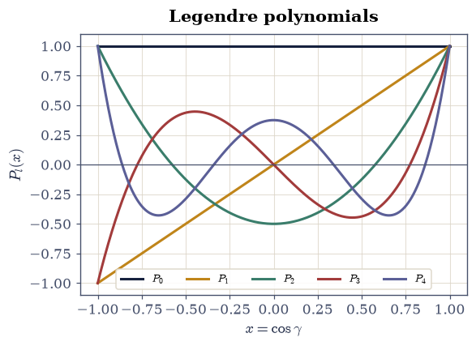
Fig. 227 The first five Legendre polynomials \(P_0\ldots P_4\) on \([-1,1]\) (scipy.special.eval_legendre). Each \(P_l\) has \(l\) roots and \(P_l(1)=1\); they are the angular building blocks of the axially symmetric multipole expansion and are mutually orthogonal over \([-1,1]\) (Exercise 2).#
Validation 1#
✓ the generating function reproduces 1/√(1−2xt+t²) [got 1.04485 vs expected 1.04485 (rtol=1e-08, atol=1e-09)]
✓ scipy's Legendre polynomials match the closed forms [got 8.88178e-16 vs expected 0 (rtol=1e-06, atol=1e-12)]
True
Exercise 2 — Orthogonality and projection#
What makes the Legendre polynomials a usable basis is their orthogonality Eq. 218: \(\int_{-1}^{1}P_m P_n\,dx = \tfrac{2}{2n+1}\delta_{mn}\). Orthogonality is exactly what lets us project: the coefficient of \(P_n\) in any expansion \(f=\sum_n c_n P_n\) is \(c_n=\tfrac{2n+1}{2}\int_{-1}^{1}f\,P_n\,dx\), a single integral. The multipole moments are this projection, applied to a charge distribution. The target used here, \(f(x)=|x|\), is chosen deliberately: it is even, so only even \(n\) contribute, and its kink at the origin slows convergence to algebraic, so the partial sums are still visibly rounding the corner at twelve terms — the Legendre analogue of the Gibbs phenomenon.
Compute \(\int_{-1}^{1}P_m P_n\,dx\) for \(m,n\le3\) with
scipy.integrate.quadand confirm the diagonal is \(2/(2n+1)\) and the off-diagonal vanishes.Write
legendre_coeff(n), the projection \(c_n=\tfrac{2n+1}{2}\int_{-1}^{1}f\,P_n\,dx\) evaluated withscipy.integrate.quad, andreconstruct(x, nterms), the partial sum \(\sum_{n<\texttt{nterms}}c_n P_n(x)\). Write these yourself — the implementation is the lesson: this analysis-and-synthesis pair is how a distribution is resolved into moments and put back together.Project \(f(x)=|x|\) onto the first twelve Legendre polynomials and watch the partial sums converge to it (Fig. 228).
∫PₙPₙ dx = [2. 0.666667 0.4 0.285714] expected 2/(2n+1) = [2. 0.666667 0.4 0.285714]
max off-diagonal |∫PₘPₙ| = 9.71e-17
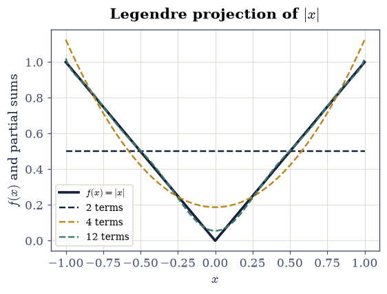
Fig. 228 Projecting \(f(x)=|x|\) onto the Legendre basis and reconstructing it from partial sums (2, 4, and 12 terms). The coefficients are the orthogonal projections \(c_n=\tfrac{2n+1}{2}\int f P_n\,dx\); the series converges to \(f\), with the mild ripple near the kink at \(x=0\) the Legendre analogue of the Gibbs phenomenon.#
Validation 2#
✓ the Legendre polynomials are orthogonal with norm 2/(2n+1) [max|Δ| = 5.55112e-17 (rtol=1e-06, atol=1e-09)]
✓ distinct Legendre polynomials are orthogonal (zero overlap) [got 9.71445e-17 vs expected 0 (rtol=1e-06, atol=1e-09)]
True
Exercise 3 — The Legendre expansion of the Coulomb kernel#
With the generating function in hand, the kernel expansion Eq. 216 follows directly. For a source point on the \(z\)-axis at distance \(d\) and a field point at radius \(r>d\) and polar angle \(\theta\), the angle between them is \(\theta\) itself, so \(1/|\mathbf r-\mathbf r'| = (1/r)\sum_l (d/r)^l P_l(\cos\theta)\). Put the source at \(d=0.3\,\)m on the \(z\)-axis and the field points at \(r=1.0\,\)m over \(\theta\in[0,\pi]\); with \(d/r=0.3\) the geometric convergence reaches \(\sim10^{-13}\) by the twenty-fourth term.
Confirm the truncated sum (24 terms of
scipy.special.eval_legendre) reproduces the exact kernel \(1/\sqrt{r^2+d^2-2rd\cos\theta}\) at every angle at once.
max |Legendre series − exact kernel| over θ∈[0,π]: 4.03e-13
Validation 3#
✓ the Legendre expansion reproduces the Coulomb kernel 1/|r−r'| [max|Δ| = 4.02789e-13 (rtol=1e-06, atol=1e-09)]
True
Exercise 4 — Multipole moments of a discrete distribution#
For a set of point charges the integrals become sums: the monopole is \(Q=\sum_i q_i\) and the dipole moment is \(\mathbf p=\sum_i q_i\mathbf r_i\) Eq. 217. Truncating the expansion after the dipole gives the far-field approximation \(\varphi\approx (kQ)/r + k\,\mathbf p\cdot\hat{\mathbf r}/r^2\), which should track the exact superposed potential ever better as \(r\) grows (Fig. 229). The cloud used here is \(q_1=+1\,\)nC at \((0,0,0.03)\), \(q_2=-1\,\)nC at \((0.02,0,0)\), and \(q_3=+0.5\,\)nC at \((0,0,-0.02)\,\)m — deliberately asymmetric and with non-zero net charge, so every multipole order has something to say.
Compute \(Q=\sum_i q_i\) and \(\mathbf p=\sum_i q_i\mathbf r_i\).
Evaluate the monopole-only and monopole+dipole approximations along an outward ray, and compare both to the exact superposed potential (Fig. 230). Adding the dipole term should sharply cut the far-field error.
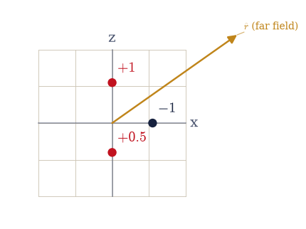
Fig. 229 The discrete charge configuration (red positive, blue negative; \(+1\), \(-1\), \(+0.5\,\)nC) confined near the origin, viewed in the \(x\)–\(z\) plane, with a distant field point along \(\hat{\mathbf r}\). From far away the cloud is summarised by its monopole \(Q=\sum q_i\) and dipole \(\mathbf p=\sum q_i\mathbf r_i\); higher moments fall off faster still.#
monopole Q = 0.500 nC
dipole p = [-0.02 0. 0.02] nC·m (|p| = 0.0283 nC·m)
relative error at r=2.0 m: monopole only = 0.423%, monopole+dipole = 2.45e-04
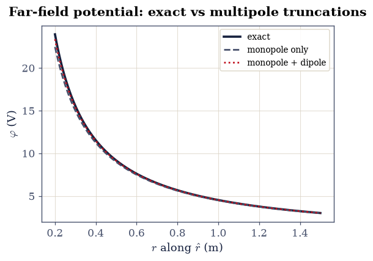
Fig. 230 Exact superposed potential along an outward ray (solid) versus the monopole-only (\(kQ/r\)) and monopole+dipole (\(kQ/r + k\,\mathbf p\cdot\hat{\mathbf r}/r^2\)) approximations. The monopole alone misses the near-field structure; adding the dipole term tracks the exact curve closely once \(r\) exceeds the cloud’s size, the multipole series earning its keep term by term.#
Validation 4#
✓ adding the dipole term sharply improves the far-field potential [monopole 0.423% → monopole+dipole 2.45e-04]
True
Exercise 5 — The pure dipole and quadrupole#
The two leading non-trivial moments have signature angular patterns (Fig. 231). A point dipole (two opposite charges a small distance apart) has potential \(\varphi=k\,p\cos\theta/r^2\), the \(P_1=\cos\theta\) pattern. A linear quadrupole (\(+q\) at \(+a\hat{\mathbf z}\), \(-2q\) at the origin, \(+q\) at \(-a\hat{\mathbf z}\)) has zero charge and zero dipole, so its leading term is the quadrupole, \(\varphi\propto P_2(\cos\theta)/r^3\). Each is built so that every moment below its namesake cancels, which is exactly what makes the far fields fall as \(1/r^2\) and \(1/r^3\).
Build both configurations with \(q=1\,\)nC and \(a=0.01\,\)m.
Confirm the exact dipole potential, scaled by \(r^2/(kp)\), equals \(P_1=\cos\theta\).
Confirm the exact quadrupole potential at large \(r\), normalised, carries the \(P_2(\cos\theta)\) pattern (
scipy.special.eval_legendre) (Fig. 232).
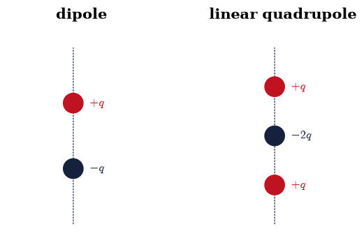
Fig. 231 Left: a point dipole, \(+q\) and \(-q\) separated along \(\hat{\mathbf z}\), whose potential carries the \(P_1=\cos\theta\) pattern. Right: a linear quadrupole, \(+q,\,-2q,\,+q\) along the axis, with zero net charge and zero dipole, so its leading far field is the quadrupole \(\propto P_2(\cos\theta)/r^3\).#
dipole: max |φ·r²/(kp) − cosθ| = 3.97e-04
quadrupole: max |normalised φ − normalised P₂(cosθ)| = 1.36e-04
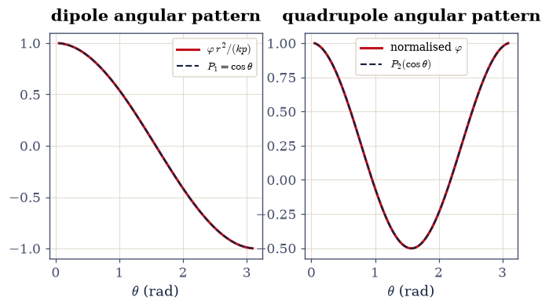
Fig. 232 Angular patterns of the two configurations. Left: the dipole potential scaled by \(r^2/(kp)\) lies on \(P_1=\cos\theta\). Right: the linear-quadrupole potential at large \(r\), normalised, follows \(P_2(\cos\theta)\) (scipy.special.eval_legendre). The leading multipole’s angular law is exactly its Legendre polynomial.#
Validation 5#
✓ the dipole potential carries the P₁=cosθ angular pattern [got 0.000397162 vs expected 0 (rtol=1e-06, atol=0.001)]
✓ the linear-quadrupole far field carries the P₂(cosθ) pattern [got 0.000136226 vs expected 0 (rtol=1e-06, atol=0.02)]
True
Exercise 6 — Spherical harmonics#
Drop axial symmetry and the angular structure needs the full spherical harmonics
\(Y_l^m(\theta,\varphi)\) Eq. 219, eigenfunctions of the angular
Laplacian with eigenvalue \(-l(l+1)\), orthonormal on the sphere,
\(\int Y_l^{m\,*}Y_{l'}^{m'}\,d\Omega=\delta_{ll'}\delta_{mm'}\). The first few are
\(Y_0^0=1/\sqrt{4\pi}\), \(Y_1^0=\sqrt{3/4\pi}\cos\theta\),
\(Y_1^{\pm1}=\mp\sqrt{3/8\pi}\sin\theta\,e^{\pm i\varphi}\). Their derivation
(separation of Laplace’s equation, a Sturm–Liouville problem) is deferred to
[AWH13]. Throughout, they come from
scipy.special.sph_harm_y(l, m, theta, phi) — the current API; the old
sph_harm was removed.
The phase, not the modulus. \(|Y_l^m|^2\) is axially symmetric for every \((l,m)\), because the \(\varphi\)-dependence \(e^{im\varphi}\) has unit modulus, so a balloon of \(|Y_l^m|^2\) is just the \(\theta\)-profile spun about the axis and shows nothing a 2-D plot would not — the azimuthal structure lives in the phase. The real spherical harmonics \(Y_{lm}^{\mathrm{real}}\propto P_l^m(\cos\theta)\cos m\varphi\) (or \(\sin|m|\varphi\) for \(m<0\)) do show it: drawn as 3-D surfaces with radius \(\propto|Y_{lm}^{\mathrm{real}}|\) and colour set by its sign, they are the familiar lobed orbital shapes, and the \(m\neq0\) cases carry genuine azimuthal lobes a 2-D polar plot cannot.
Confirm \(\int|Y_l^m|^2\,d\Omega=1\) for several \((l,m)\) by integrating with
numpy.trapezoidover \(\theta,\varphi\) with the \(\sin\theta\) measure.Verify \(Y_1^0\) against its closed form \(\sqrt{3/4\pi}\cos\theta\).
Visualise the angular structure in 3-D, as surfaces of the real spherical harmonics for a spread of \((l,m)\) (Fig. 233).
∫|Yₗᵐ|² dΩ for [(0, 0), (1, 0), (1, 1), (2, 0), (2, 1), (3, 2)] = [1.0, 1.0, 1.0, 1.0, 1.0, 1.0]
max |∫|Yₗᵐ|²dΩ − 1| = 2.58e-05
Y₁⁰ vs √(3/4π)cosθ: max deviation = 1.11e-16
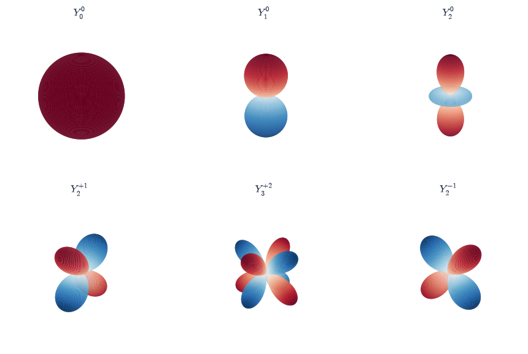
Fig. 233 Three-dimensional surfaces of the real spherical harmonics \(Y_{lm}^{\mathrm{real}}\) for several \((l,m)\) (scipy.special.sph_harm_y): the radius is \(\propto|Y_{lm}^{\mathrm{real}}|\) and the colour is its sign (red positive, blue negative). These are the familiar lobed orbital shapes, and the \(m\neq0\) cases (\(Y_2^{+1}\), \(Y_3^{+2}\), \(Y_2^{-1}\)) show genuine azimuthal lobes a 2-D polar plot cannot. The squared modulus \(|Y_l^m|^2\) is itself axially symmetric, so its azimuthal information lives entirely in the phase drawn here; these same patterns return as the angular hydrogen orbitals in Vol VI.#
Validation 6#
✓ the spherical harmonics are normalized on the sphere [got 2.58316e-05 vs expected 0 (rtol=1e-06, atol=0.01)]
✓ Y₁⁰ matches its closed form √(3/4π)cosθ [got 1.11022e-16 vs expected 0 (rtol=1e-06, atol=1e-12)]
True
Exercise 7 — The general multipole expansion in spherical harmonics (student)#
For a distribution with no axial symmetry, the moments become the spherical-harmonic multipole moments \(q_{lm}=\sum_i q_i\,r_i^{\,l}\,Y_l^{m\,*}(\theta_i,\varphi_i)\), and the exterior potential is \(\varphi(\mathbf r)=\tfrac{1}{\varepsilon_0}\sum_{l,m} \tfrac{1}{2l+1}\,q_{lm}\,Y_l^m(\theta,\varphi)/r^{l+1}\) (Fig. 234). The distribution here is \(q_1=+2\,\)nC at \((0.02,0.01,0.0)\) and \(q_2=-2\,\)nC at \((-0.01,0.02,0.015)\,\)m — off every coordinate axis, so nothing is axial and the \(m\neq0\) moments are genuinely exercised. Evaluating \(Y_l^m\) at a source point needs that point in spherical coordinates \((r,\theta,\varphi)\), with \(\theta\) the polar angle. These \(Y_l^m\) are, identically, the angular hydrogen states of Vol VI: a down-payment on quantum mechanics.
Write
q_lm(l, m), the spherical-harmonic multipole moment \(q_{lm}=\sum_i q_i\,r_i^{\,l}\,Y_l^{m\,*}(\theta_i,\varphi_i)\), evaluating the harmonics withscipy.special.sph_harm_y. Write this one yourself — the implementation is the lesson: this projection onto the \(Y_l^m\) is the general multipole moment, of which the \(Q\) and \(\mathbf p\) of Exercise 4 are the \(l=0\) and \(l=1\) cases.Compute the \(q_{lm}\) for \(l\le3\) and reconstruct the potential on a sphere of radius \(0.4\,\)m, keeping terms up to degree \(l=0,1,2,3\) in turn.
Confirm the relative error against the exact superposed potential falls as more \((l,m)\) terms are kept (Fig. 235).
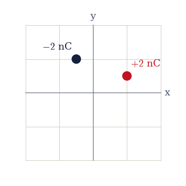
Fig. 234 An asymmetric pair, \(+2\,\)nC and \(-2\,\)nC placed off every coordinate axis, shown in the \(x\)–\(y\) plane. With no axial symmetry the angular structure needs the full spherical-harmonic basis \(Y_l^m\), not just the axial \(P_l(\cos\theta)\); the moments \(q_{lm}\) are the projections onto that basis.#
up to l=0: max relative reconstruction error = 1.000e+00
up to l=1: max relative reconstruction error = 7.132e-02
up to l=2: max relative reconstruction error = 3.763e-03
up to l=3: max relative reconstruction error = 1.993e-04
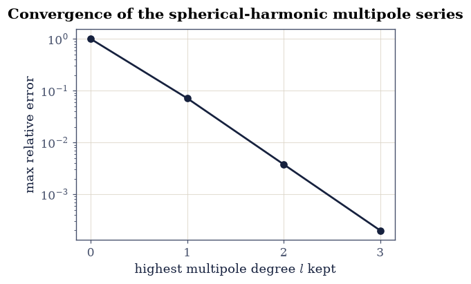
Fig. 235 Relative error of the spherical-harmonic reconstruction of the off-axis pair’s potential on a sphere of radius \(0.4\,\)m, as terms up to degree \(l\) are kept. Each new multipole order drops the error by orders of magnitude, the series converging to the exact potential, with the dipole (\(l=1\)) doing most of the work here because the net charge is zero.#
Validation 7#
✓ the spherical-harmonic multipole series converges to the exact potential [errors by l: ['1.0e+00', '7.1e-02', '3.8e-03', '2.0e-04']]
True
Exercise 8 — The gravitational quadrupole (student)#
The expansion is blind to whether its source is charge or mass: replace \(q\) by \(m\) (and \(k\) by \(-G\)) and it describes gravity. A spherical body has only a monopole, but a flattened one has a quadrupole (Fig. 236). Earth is oblate, and its quadrupole is the famous \(J_2\) term that makes satellite orbits precess. The relevant moment is \(Q_{zz}=\sum_i m_i(3z_i^2-r_i^2)\); for an oblate body (mass pushed toward the equator, where \(z^2\ll r^2\)) it is negative, and \(J_2=-Q_{zz}/(2Ma^2)>0\). A uniform spheroid of total mass \(M\) has the closed form \(Q_{zz}=\tfrac25 M(c^2-a^2)\), negative whenever \(c<a\) — the check the sampled value has to meet.
Model an oblate spheroid (equatorial radius \(a=1\), polar radius \(c=0.9\), in scaled units) by filling it with equal point masses: rejection-sample points from the enclosing box with a seeded
numpy.random.default_rngand keep those satisfying \((x^2+y^2)/a^2+z^2/c^2\le1\).Compute \(Q_{zz}=\sum_i m_i(3z_i^2-r_i^2)\).
Confirm it is negative and matches the uniform-spheroid closed form \(\tfrac25 M(c^2-a^2)<0\), so the gravitational quadrupole (the \(J_2\) term) is non-zero with the sign oblateness demands.
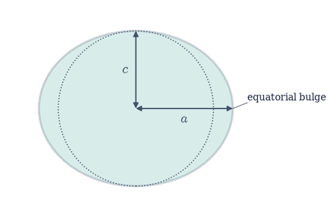
Fig. 236 An oblate body (equatorial radius \(a\), polar radius \(c<a\)): the equatorial bulge places mass at large cylindrical radius and small \(|z|\), so \(3z^2-r^2<0\) there and the gravitational quadrupole \(Q_{zz}=\sum m_i(3z_i^2-r_i^2)\) is negative. This is Earth’s \(J_2\), the dominant departure from a point mass and the cause of satellite-orbit precession.#
Q_zz (sampled) = -0.0769 closed form (2/5)M(c²−a²) = -0.0760
Q_zz < 0 ⇒ J₂ > 0 (oblate): J₂-sign proxy = 0.0769
Validation 8#
✓ an oblate mass has a negative Q_zz, i.e. a positive gravitational quadrupole J₂ [Q_zz = -0.0769]
✓ the sampled quadrupole matches the uniform-spheroid closed form (2/5)M(c²−a²) [got -0.0768849 vs expected -0.076 (rtol=0.02, atol=1e-09)]
True
Exercise 9 — Why the multipole expansion matters#
The thread running through every exercise is one idea: the lowest non-zero moment dominates the far field, so a distribution we cannot resolve in detail is characterised, from afar, by a few numbers. A neutral molecule is invisible as a monopole but speaks through its dipole and quadrupole (the basis of intermolecular forces in chemistry); the cosmic microwave background is described by its angular multipoles \(C_l\) (the cosmologist’s spherical-harmonic spectrum of the sky); an antenna’s reach is set by its radiation multipoles (§3.10). The moments are the fingerprint of a source seen from a distance. The Exercise 4 cloud makes that concrete: it has a non-zero net charge, so its monopole term \(kQ/r\) must eventually account for all of the potential, the higher moments fading as powers of \(1/r\).
Taking the charge cloud, the monopole \(Q\) and the ray direction \(\hat{\mathbf r}\) you set up in Exercise 4, and reaching further out to \(r=3\,\)m, evaluate the fraction of the exact potential captured by the monopole alone and watch it approach \(1\) as \(r\) grows (Fig. 237).
monopole fraction of the exact potential at r=3.0 m: 0.9972
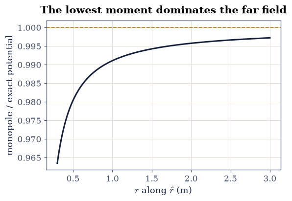
Fig. 237 The fraction of the exact potential captured by the monopole term alone, along an outward ray for the Exercise 4 cloud. As \(r\) grows the higher moments fade as powers of \(1/r\) and the fraction approaches \(1\): far enough away, the lowest non-zero moment is the whole story, which is why a few multipole numbers fingerprint a source we cannot otherwise resolve.#
Validation 9#
✓ far away the monopole term captures almost all of the potential (lowest moment dominates) [monopole fraction at r=3 m = 0.997]
True
Notebook summary#
The Legendre polynomials from the generating function (
scipy.special.eval_legendre, matched to the closed forms), their orthogonality \(\int P_mP_n=2/(2n+1)\,\delta_{mn}\), and the Legendre expansion of the Coulomb kernel.Discrete monopole and dipole moments and the far-field truncation; the dipole (\(P_1\)) and quadrupole (\(P_2\)) angular patterns; the spherical harmonics via the current
scipy.special.sph_harm_yAPI (rendered in 3-D as the real-harmonic orbital lobes, orthonormal to \(\sim10^{-2}\)); and the general \(q_{lm}\) expansion converging to the exact potential.Earth’s gravitational quadrupole (\(J_2\)) of an oblate spheroid, the same machinery applied to gravity. Established the tools-with-a-note standard for special functions.
Outlook#
The quadrupole tensor. Its trace-free form and principal axes are the same mathematics as the rigid-body inertia tensor (§2.6); diagonalizing it gives the distribution’s natural axes. It is one more member of the course’s rank-2 family, transforming under rotation by the conjugation \(Q\,\mathrm{diag}\,Q^{\mathsf T}\) that §2.6 names and §3.16 puts under explicit test — though unlike the inertia or permittivity tensors it is built trace-free, so one of the two rotation invariants is spent by construction.
The full \(Y_l^m\) for \(m\ne0\). Built from the associated Legendre functions \(P_l^m\) (
scipy.special.assoc_legendre_p/lpmv); the addition theorem for spherical harmonics ties the \(Y_l^m\) basis back to the single \(P_l(\cos\gamma)\) of Eq. 216.Forward links. Radiation multipoles (§3.10); the angular hydrogen states and the full Sturm–Liouville derivation of these special functions (Vol VI); the CMB and gravitational (\(J_2\), and beyond) multipoles.
References#
George B. Arfken, Hans J. Weber, and Frank E. Harris. Mathematical Methods for Physicists. Academic Press, 7 edition, 2013.
David J. Griffiths. Introduction to Electrodynamics. Cambridge University Press, 4 edition, 2017.
John David Jackson. Classical Electrodynamics. Wiley, 3 edition, 1998.
Wolfgang Nolting. Theoretical Physics 3: Electrodynamics. Springer, 2016.